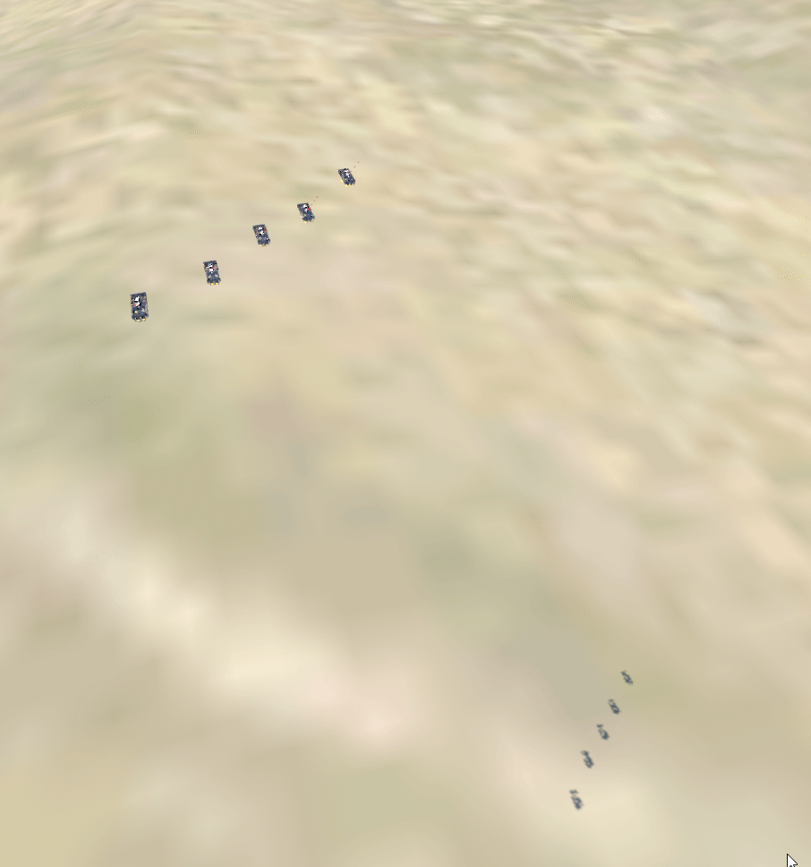
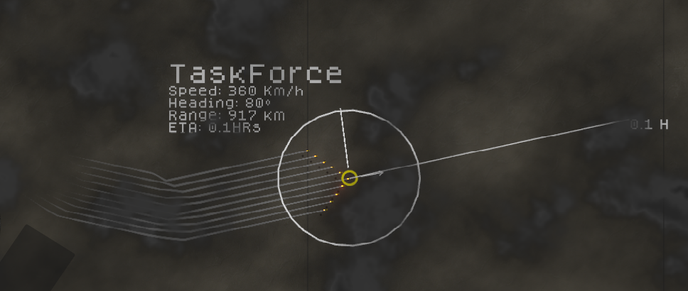
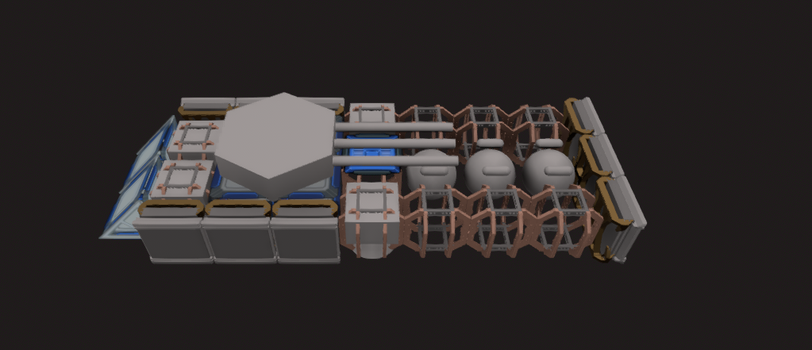

Totally Accurate Dieselpunk Airship Empire Simulator
A hobby grand-strategy / simulation game built in Godot 4 where you command a dieselpunk airship empire. Design and construct modular airships from individual components, then send your task forces across a vast map to expand your empire, engage enemies, and control the skies.

The game features a fully custom tactical map with task-force movement, heading tracking, speed, range, and ETA readouts — giving you real-time situational awareness over your forces.

Build your airships piece by piece using a modular ship construction system. Arrange engines, hull segments, turrets, fuel tanks, and more to create the perfect vessel for your mission.
